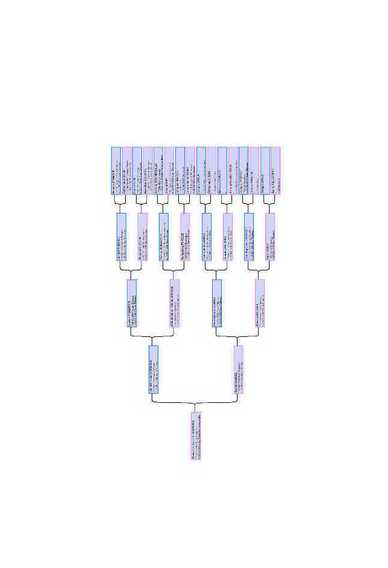

Recherches généalogiques
Vous souhaitez réaliser un arbre généalogique pour vous ou pour un tiers (cadeau à offrir) :
- arbre d'ascendance agnatique (lignée paternelle) et/ou cognatique (lignée maternelle).
- arbre d'ascendance par quartiers (ensemble des branches ancestrales).
- arbre de descendance à partir d'un couple d'ancêtres.
Un dossier de recherches sera établi, il contiendra :
- l'ensemble des documents : actes d'état civil, actes paroissiaux, avec mention des sources consultées.
- l'arbre d'ascendance ou de descendance selon la demande.
Tarifs :
- à partir de 100€ pour 3 générations en ascendance agnatique ou cognatique
- à partir de 400€ pour 3 générations en ascendance par quartier
- à définir selon votre projet en descendance